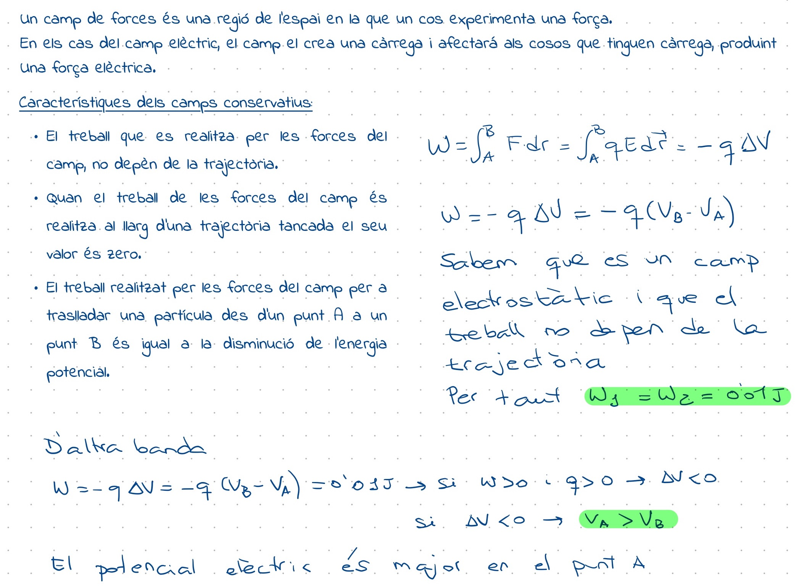

Qüestió JL19
Expliqueu breument queÌ€ eÌs un camp de forces conservatiu. Una caÌ€rrega positiva es troba en el si d'un camp electrostaÌ€tic. El treball realitzat pel camp per a desplaçar-la entre els punts A i B de la figura eÌs de 0,01 J si se segueix el camiÌ (1) Quin eÌs el treball si se segueix el camiÌ (2)? En quin punt, A o B, eÌs major el potencial eleÌ€ctric? Raoneu les respostes.
